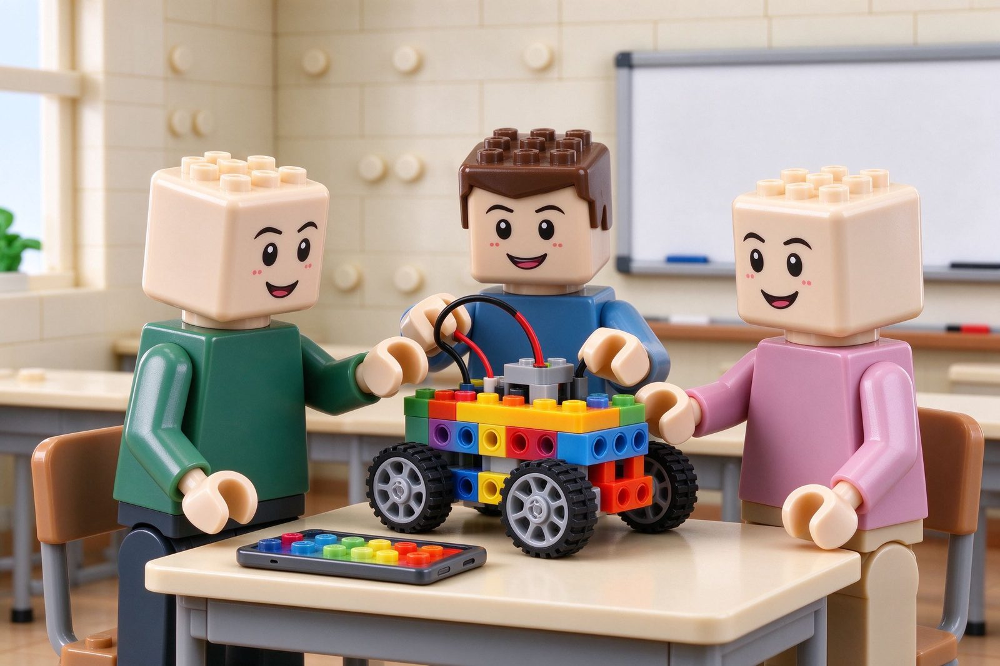

从积木课堂到科技素养：乐之疆的办学沿革
学校成立于 2012 年，同年与乐高教育中国区唯一代理北京西觅亚合作，建立天津市首家丹麦乐高教育部授权的“乐高活动中心-天津晶采中心 LEGO EDUCATION CENTER（全国 NO.060）”，长期在河西区下瓦房校区开展科技类校外培训。

天津市河西区乐之疆教育培训学校成立于 2012 年，同年我校与乐高教育中国区唯一代理——北京西觅亚合作，建立天津市首家丹麦乐高教育部授权的"乐高活动中心-天津晶采中心 LEGO EDUCATION CENTER（全国 NO.060）"。学校坐落于天津市河西区下瓦房晶采大厦，行政主管单位为天津市河西区民政局，业务主管单位为天津市河西区教育局。学校于 2014 年完成民办非企业单位登记，登记地址为天津市河西区大沽南路 459 号晶采大厦；日常教学在晶采大厦写字楼四楼，行政办公与登记信息以登记证书为准。
建校十余年来，我校秉承"立德树人"的教育理念，通过人工智能机器人的设计、制作以及编程学习，让孩子成为主动思考者、学习者、实践者和创造者。早期课程以积木搭建与机械结构启蒙为主；随着课程体系逐步完善，学校在原有机器人搭建基础上，延伸出图形化编程、代码编程、创客电子、3D 建模打印与人工智能启蒙等方向，形成面向不同年龄段孩子的阶梯式课程路径。
我们坚持的几件事
- 按孩子当前水平推荐班型，能力达标后逐级升班，不按年龄“一刀切”。
- 以项目任务驱动课堂，让孩子在完成机器人、小游戏、创客作品的过程中学习知识。
- 课堂强调启发式引导，保护孩子的兴趣与表达欲。
具体班级设置、课时安排与收费标准，以到校测评后校区出具的当期方案为准。
想了解这节课适不适合孩子？
校区在天津市河西区大沽南路 459 号下瓦房晶采大厦写字楼四楼，09:00–19:00 可到访，也可在线预约体验课。